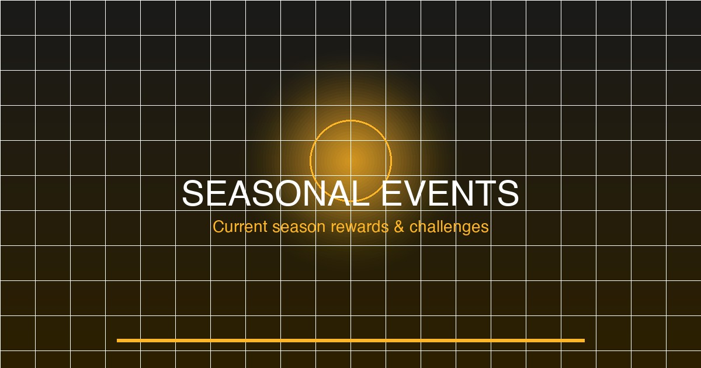

Summer Thunder brings intense touge racing events, beach Sprint challenges and the annual Japan Rally Championship. The map stays predominantly dry with occasional afternoon rain showers.
| Car | Year | Class | Source | Estimated Value |
|---|---|---|---|---|
| Nissan GT-R Nismo | 2014 | S1 899 | Season Championship | ₵1,200,000 |
| Honda NSX Type R | 1997 | A 800 | Forzathon Shop | ₵450,000 |
| Toyota GR Supra | 2020 | A 800 | Summer Festival Playlist 50% | ₵180,000 |
| Mazda RX-7 Spirit R | 2003 | A 800 | Touge Championship | ₵350,000 |
| Subaru WRX STI Rally Car | 2018 | B 700 | Daily Challenges | ₵350,000 |
5-race series culminating in the Mt. Tsukuba sprint finale.
Unlocked after completing the main championship. 3-leg touge race through the Izu Peninsula with S1-class cars.
Summer Thunder offers 8-10 Forzathon Points per day through daily challenges. The weekly total of 420+ FP can be earned through:
Recommended spending: Prioritize the Summer Festival livery (300 FP, limited quantity) before cars appear in the Autoshow.
| Stunt | Location | Season Target | Bonus |
|---|---|---|---|
| Speed Trap | Hakone Toll Road | 180 mph | 10 FP |
| Speed Trap | Fuji Expressway | 210 mph | 10 FP |
| Drift Zone | Mt. Hakone Hairpins | 75,000 pts | 10 FP |
| Danger Sign | Akihabara Building | 295 ft | 10 FP |
| Drift Zone | Osaka Harbor | 100,000 pts | 10 FP |